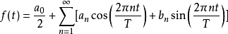
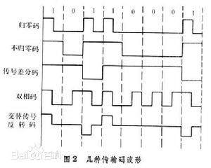
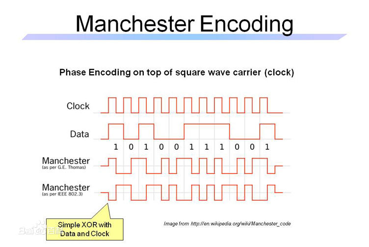

网络协议最底层是物理层(Physical layer)，该层关注的是单个比特在物理信道上的传输。传输信道分为三类：有线(铜线和光纤)、无线(wireless)和卫星(satellite)。传输信号在信道上真正传输并不是数字比特0和1，而是通过电压变化、有无光照、电磁波频率跳动等来模拟信号，而数字调至解调技术就是主要解决如何把模拟信号转化成数字比特以及将数字比特还原成模拟信号。
数据通信的理论基础
改变诸如电压或电流等某种物理特性的方法可用来在电线上传输信息。如果用一个以时间t为自变量的单值函数f(t)来表示电压或电流的值，就可以对信号行为进行建模，并用数学手段进行分析。
傅里叶分析
任何一个行为合理周期为T的周期g(t)，都可以表示成用正弦函数和余弦函数组成的无穷级数：

简单理解为：傅里叶变换, 就是在用一种特殊的正交基(正交函数)在对原函数做线性变换。无穷个正弦波叠加，最终会叠加成一个标准的矩形，有一个n维向量a, 我们总可以找到一组n维正交基e1 e2 e3…en等分量, 使得
a = c1 e1 + c2 e2 + c3 e3 + ……………………cn en。
这样就可以通过频率的叠加来表示矩形，从而矩形的上下分别表示比特里的1和0，重复的矩形来表示时钟。
傅里叶分析与数据通信的关联在于实际信道对不同频率信号有不同的影响。所有的传输设施在传输过程中都要损失一些能量，如果所有的频率分量都等量衰减，则结果信号将会在振幅上有所减少，但不会变形，模拟信号还是可以准确的转化为数字比特。但是所有的传输设施对于不同分量的衰减程度并不相同，从而导致接收端接受到的结果信号发生变形，这样在转化为数字比特时0被认为是1，1被认为是0，这是不能容忍的。一般情况下对导线而言，在0到某个频率f HZ的这段范围内，振幅在传输过程中变化衰减，而在频率f HZ只上的所有频率振幅都将有不同程度的减弱，0-f HZ这段在传输过程中振幅变化明显减弱的频率(HZ,为了纪念赫兹)宽度就称为带宽(bandwidth)。实际上，截止频率并没有那么尖锐，首页通常引用的带宽是指从0到使得接收能量保留一半的那个频率位置。
信道的最大数据速率
由于系统中分子的运动，随机热噪声总是存在的信号功率S与噪声功率N的比值称为信噪比S/N。香农理论：对于一条带宽为B HZ、噪声比是S/N的有噪声信道：
最大比特率=B log2 (1+S/N)
也就是说信道的传输能力是有限的。例如：在普通电话线上提供访问Internet的ADSL使用了大约1MHZ的带宽，线路上信噪比的程度取决于住宅和电话交换局之间的距离，对于1~2千米的短距离来说40分贝的信噪比算是很好的状况了。正是因为电话线具有这样的特性，因此无论采用多少个信号等级，也不管采样频率多快或多慢，永远也不可能在该信道上获得高于13Mbps(bit/s)的数据率。
传输介质
物理层的作用是将比特从一台机器传输到另一台机器。每种传输介质都有独特的性质，体现在带宽、延迟、成本以及安装和维护难易程度上的不同。大致上可以将介质分为引导性介质(有线介质，比如铜线和光纤)和非引导性介质(无线介质，比如无线电、卫星和激光)两大类。
常用有线介质
双绞线(twisted pair)
一种最老但至今常用的传输介质是双绞线，由两根相互绝缘的铜线组成，铜线直径大约1mm。两根铜线以类似DNA分子链的螺旋状的形式紧紧绞合在一起，两根平行的先会构成一个很好的天线，不同电线产生的干扰会相互抵消，从而能显著降低电线的辐射。信号通常以两根电线的电压差来承载。
双绞线既可以用于传输模拟信号，也可以用于传输数字信号。最常用的应用是电话系统。打有线电话和ADSL接入Internet都发生在这些双绞线上。
光纤
光纤主要用于网络骨干的长途传输、高速局域网以及高速Internet接入，比如现在已经比较常见的光纤到户(FttH, Fiber to the Home)。光纤传输系统由三个关键部件构成：光源、传输介质和探测器。按照惯例，一个光脉冲表示比特1，没有光脉冲表示比特0，传输介质是超薄玻璃纤维。光探测器探测到光时产生一个电脉冲，光纤接受到电子信号时将其转换成光脉冲并传输出去，然后在另一端把光脉冲转换回电子信号输出给接收端。
原理：全反射，光由光密（即光在其中传播速度较小的）媒质射到光疏（即光在其中传播速度较大的）媒质的界面时，全部被反射回原媒质内的现象。当光由光密介质射向光疏介质时，折射角将大于入射角。当入射角增大到某一数值时，折射角将达到90°，这时在光疏介质中将不出现折射光线，只要入射角大于上述数值时，均不再存在折射现象，这就是全反射。所以产生全反射的条件是：①光必须由光密介质射向光疏介质．②入射角必须大于临界角。著名的实验是丁达尔做的光随水弯曲的实验。这种光源可以传播几千米而事实上没有损失。
分类：由于任何入射角度大于临界值的光束都会在内部反射，所以许多不同的光束以不同的角度来回反射着向前传播，每一束光都有不同的模式，这样的光纤称为多模光纤(multi-mode fiber)；然而，如果光纤的直径减少到只有几个光波波长大小的时候，则光波就如同一个波导，光只能按直线传播而不会反射，从而形成单模光纤(single-mode fiber)。单模光纤比较昂贵，广泛用于长距离传输，目前可用的单模光纤可以100 Gbps的速率传输数据到100 KM远而不用放大器。
通常用作信号源的有发光二极管(LED, Light Emitting Diodes)和半导体激光两种。光纤的接收端是一个光电二极管。当遇到光照时，光电二极管就发出一个电脉冲，其响应时间即把光脉冲转换成电脉冲所需要的时间，限制了数据传输率在100 Gbps左右。
光纤相比铜线的优点
- 光纤比铜线能够处理更高的带宽.
- 光纤具有较低的衰减，所以在较长的线路上，大约每50 KM才需要一个中继器；铜线大约每5 KM就需要一个中继器.
- 光纤不受电源浪涌、电磁干扰、电源故障、空气中腐蚀性化学物质侵蚀等影响.
- 光纤细小且重量较轻.
- 光纤不会漏光，不易被接入，这些特性使得光纤很难被搭线窃听，安全性高.
无线介质
当电子运动时会产生电磁波，电磁波可在空中传播。当一个大小适中的天线被连接到一个电路上，电磁波就可以有效地被广播出去，在一定距离内的接受者能收到该电磁波。所有的无线通信都是基于这样的原理实现的。
无线电传输
无线电波的特性与频率有关。在低频部分，无线电波能够很好地穿透障碍物，但随着离信号源越来越远，其能量急剧下降，主要用于3G/4G移动电话网络；在高频部分，无线电倾向于以直线传播，遇到障碍物会反弹回来，也更容易被水和其他障碍物吸收，主要用于无线局域网：802.11-WiFi。
微波传输
最初运营商大多使用低频段的无线来传输信号，随着时间的推移，使用的低频无线谱已经变得越来越拥挤。对于频段越来越多的需求驱使运营商们开始向高频发展，现在使用的频段已经扩展到了10 GHZ，但是到了4 GHZ，微波被水吸收了。这个现象造就现在我们常见的微波炉等产业的发展。
红外传输
电视机、空调的遥控器都采用红外线通信，红外线传播具有方向性，并且不能穿透固体墙壁。
通信卫星和地球同步卫星等
数字调制
模拟信号可表示成诸如连续变化的电压、光照强度或频率，数字比特用0和1来表示。为了发送数字信号，我们必须设法用模拟信号来表示比特。比特和代表它们的信号之间的转换过程称为数字调制(digital modulation)。
柱子调制的最直接形式是用正电压表示1，用负电压表示0。对于光线而言，可用光的存在表示1，没有光表示0。

但是有个问题是：接收器必须知道何时一个符号的结束和下一个符号的开始，尤其是遇到连续的0或1，才能对信号进行正确采样。比如15个0看起来很像16个0，经过一段时间后，接收器很难区分出各个比特，精确的时钟有助于解决这个问题，但在许多Mbps速率运行的链路上计时比特，因此时钟的漂移应该比最长允许运行的微妙零头还要小，这样的时钟漂移对慢速链路或短消息可能是合理的，但它显然不是一个通用的解决方案。
物理层上解决的第一个也是最重要的问题就是如何区分每一符号的开始和结束，也就是时钟恢复问题。
曼切斯特(Manchester)编码

0和1交替重复的信号为时钟信号，时钟在每个比特时间内产生一次跳变，以两倍数据比特率的速度运行。方法是把数据信号(Data)和时钟信号(Clock)异或(NOR)混合在一起。当时钟和0电压异或时，会产生一次“从低到高”的信号跳变来表示逻辑0；当时钟和1电压异或时，会产生一次“从高到低”的相反跳变来表示逻辑1。曼切斯特编码主要用在经典以太网上。
不归零逆转(NRZI, Non-Return-to-Zero Inverted)
曼切斯特编码的主要缺点是由于时钟信号在每个比特时间内会产生一次跳变，总体上就需要两倍于数据信号的带宽。而不归零逆转编码定义为：1定义为信号有跳变，反之0定义为信号无跳变。现在连接计算机外设的USB(Universal Serial Bus)标准就采用了该编码模式。
当然还需要解决一长串的0。解决这个问题的著名编码方式是4B/5B映射转换表。每4个比特被映射成一个5比特模式，使得映射结果永远不会出现连续三个0。
多路复用(multiplexing)
为了最大化利用资源，信道通常被多个信号共享。
频分复用(FDM, Frequency Division Multiplexing)
将频谱分成几个频段，每个用户完全拥有其中的一个频段来发送自己的信号。相邻频段之间的频谱间隔足够大，称为保护带，用来防止干扰。而更有效的正交频分复用算法则不需要保护带，其信道带宽被分成许多独立发送数据的子载波，每个子载波的频率响应被设计成在相邻子载波的中心为零。正交频分复用已经被广泛用于WiFi-802.11和4G。
时分复用(TDM, Time Division Multiplexing)
在这种方式下，每个用户获得固定的时间槽，以循环的方式轮流工作。其广泛用于电话蜂窝系统。
码分复用(CDM, Code Dicision Multiplexing)
其算法是非常精妙的。主要用于某些蜂窝网络、卫星通信和有线电视。
场景分析：在一个机场候机大厅，许多人正在两两交谈。FDM相当于以不同语调交谈，有的人语调高，有的人语调低，所有的人可同时进行并相互独立；TDM可以以任何方式顺序交谈；CDM相当于每对交谈者以不同的语言进行交谈，不限制语调高低，用汉语交谈的人会接受其他使用汉语说话的信息，并且把所有没有用汉语交谈的内容都当做噪声过滤掉。
CDM的关键在于：能够提取出期望的信号，同时拒绝所有其他的信号，把这些信号当做噪声。
工作原理：每个比特时间被再细分成m个更短的时间间隔码片，通常情况下，每个比特被分成64或128个码片。每个站被分配得到唯一的m位码的码片序列，表示发送比特1，码片序列的反码表示发送比特0。所有的码片序列都是精心挑选出来的，它们两两相交，意味着任何两个不同的码片序列S和T的归一化内积S·T=0，利用Walsh码可以产生这样的正交码片序列。如果S·T=0，则(-S)·(-T)=0，S·S=1。(-S)表示S的反码，实际上的表示是S上面有一条横线，而不是左边。
以8个码片为例：站A分配得到的码片序列是A=(-1-1-1+1+1-1+1+1)表示比特1，而发送(-A)=(+1+1+1-1-1+1-1-1)表示比特0。现在显示4个站的码片序列：
A=(-1-1-1+1+1-1+1+1)
B=(-1-1+1-1+1+1+1-1)
C=(-1+1-1+1+1+1-1-1)
D=(-1+1-1-1-1-1+1-1)
在一个信道内的6个传输实例：
S1=C =(-1+1-1+1+1+1-1-1)
S2=B+(-C) =(-2 0 0 0+2+2 0-2)
S3=A+(-B) =( 0 0-2+2 0-2 0+2)
S4=A+(-B)+C =(-1+1-3+3+1-1-1+1)
S5=A+B+C+D =(-4 0-2 0+2 0+2-2)
S6=A+B+(-C)+D=(-2-2 0-2 0-2+4 0)
站C信号的恢复：
S1·C=[1+1-1+1+1+1-1-1]/8=1
S2·C=[2+0+0+0+2+2+0+2]/8=1
S3·C=[0+0+2+2+0-2+0-2]/8=0
S4·C=[1+1+3+3+1-1+1-1]/8=1
S5·C=[4+0+2+0+2+0-2+2]/8=1
S6·C=[2-2+0-2+0-2-4+0]/8=-1
为了恢复出某个特定站的比特流，接收方就必须预先知道这个站的码片序列。下面是数学分析：
在同一个信道内，站A传输比特1，站B传输比特0，站C传输比特1。接受方看到的和值S=A+(-B)+C，然后计算：
S·C=(A-B+C)·C=A·C-B·C+C·C=0+0+1=1
因为所有的码片序列两两相交，故站C和其他站的内积一定是0。
原则上，给定足够的计算力，只要接收方并发地每个发送方运行相应的解码算法，就可以一次收听到所有发送方发出的信息。
交换(switch)
电路交换(circuit switching)
当你的计算机发出一个电话呼叫时，电话系统的交换设备会全力以赴寻找一条从你电话通向接收方电话的物理路径，称为电路交换。其特点是发送数据之前需要建立一条端到端的路径连接，一旦连接建立就预留了从发送方到接收端一路上的带宽资源，所有的数据将走相同的路径，让所有的数据遵循同样的路径意味着它们到达接收端的秩序不可能出现混乱，可以保证服务的质量。但如果双方建立连接，却没有流量通过这条电路，其带宽就会被浪费。我们打电话时就是使用的电路交换，接收方必须确认双方才能建立连接开始通话。
包交换(package switching)
路由器使用存储-转发的包交换技术。在数据包交换中，数据包尽可能快的被发出，双方无需在传输数据前建立专门的连接路径，没有固定的路径，不同的数据包可以走不同的路径，路径的选择取决于它们被传输时的网络状况。
因为数据包交换中没有为传输数据预留带宽，在带宽已经被占满的情况下，可能不得不等待一段时间才能被转发出去，这样就引入了排队延迟(queuing delay)，如果许多包要在同一时间被发送出去还会引入堵塞。
优缺点比较：
- 在电路交换中拥塞发生在建立电路时，而在数据包交换中拥塞发生在转发数据包时。
- 数据包交换不会浪费带宽，从整个系统角度看其效率更高，但对于单个用户来说服务质量会得不到保证。
- 数据包交换比电路交换容错性更好。如果某个交换机出现故障，所有使用它的电路都会被终止，没有数据能从这些电路上发送出去，而数据包交换可以是包绕过死掉的那个交换机。
- 电路交换按距离和时间收费；数据包交换按流量收费。
总结
物理层做的事情就是如何把比特从发送方传输到接受方。主要的功能就是如何正确的区别每一个比特，以及通过调节载波的振幅、频率、相位把信号房在一个通带上和多路复用等手段来提高物理信道的资源利用率。而差错控制及流量控制的功能主要有其上层来实现。